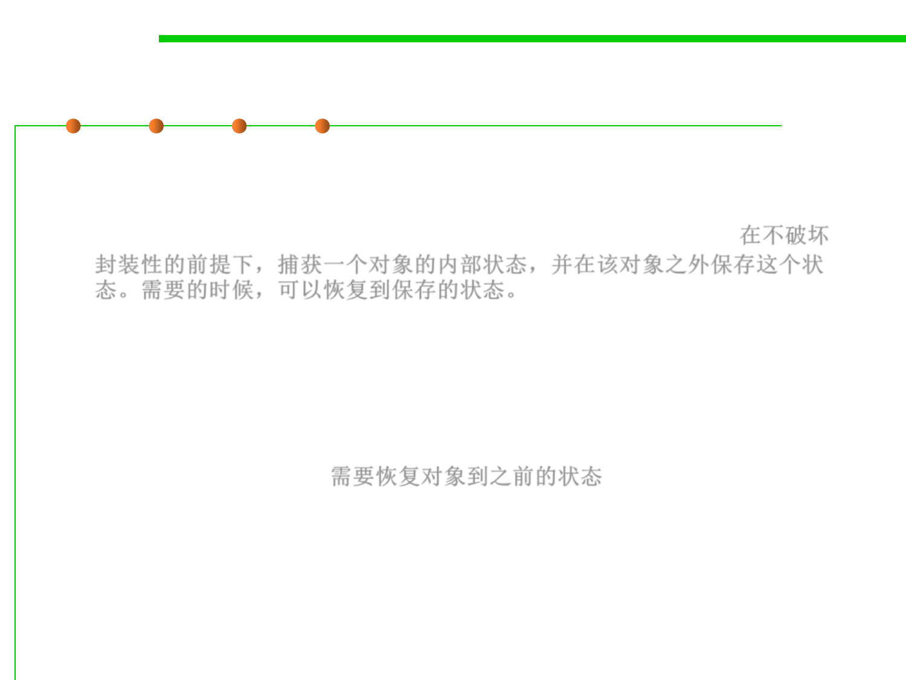

Memento Pattern
6.3 Maintainability-Oriented Construction Techniques
▪ Intent
– Without violating encapsulation, capture and externalize an object‘s
internal state so that the object can be returned to this state later.在不破坏
封装性的前提下，捕获一个对象的内部状态，并在该对象之外保存这个状
态。需要的时候，可以恢复到保存的状态。
– A magic cookie that encapsulates a "check point" capability.
– Promote undo or rollback to full object status.
▪ Problem to solve
– Need to restore an object back to its previous state (e.g. “undo” or
“rollback” operations). 需要恢复对象到之前的状态